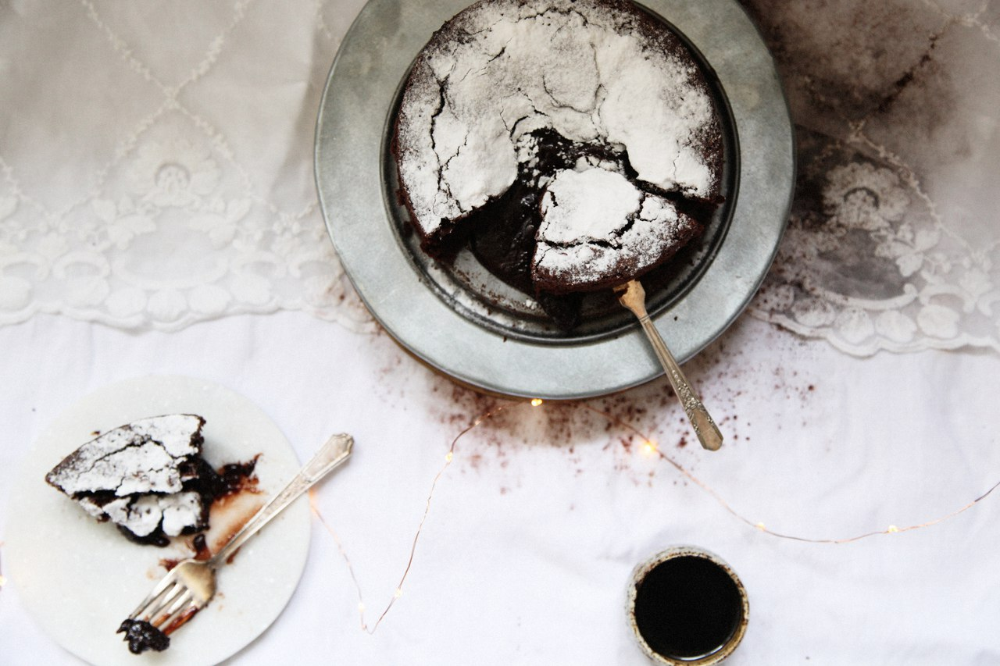

CookBook – журнал, посвященный кухне народов мира, в котором читатели смогут найти рецепты от профессиональных поваров для приготовления блюд, которые обязательно станут центром внимания на любом праздничном столе. В каждом номере – новая страна: её традиции и блюда, связанные с ними
